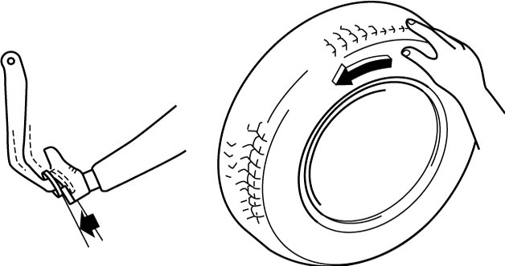

4F
| ESP® Hydraulic Unit Operation Check |
NOTE:
•A false diagnosis may result if operation check of the ESP® hydraulic unit is performed without satisfying all of the specified condition below.
Check that all the following conditions are met before performing operation check of the ESP® hydraulic unit.
•DTC C1074 and C1075 are detected, and ESP® warning light and ABS warning light light up when ESP® hydraulic unit / control module assembly (hydraulic unit) is replaced. Perform ESP® hydraulic unit operation check after sensor calibration. (Sensor calibration of ESP®)
•Lighting or blinking of warning light stops when ignition is set “ON” after completing ESP® hydraulic unit operation check.
Check that all the following conditions are met before performing operation check of the ESP® hydraulic unit.
—Battery voltage is 12 V or more.
—No air is trapped in the brake system.
—Brakes do not drag.
—No DTC is stored in ESP® hydraulic unit / control module.
•Operation check must be performed by 2 persons.—No air is trapped in the brake system.
—Brakes do not drag.
—No DTC is stored in ESP® hydraulic unit / control module.
•DTC C1074 and C1075 are detected, and ESP® warning light and ABS warning light light up when ESP® hydraulic unit / control module assembly (hydraulic unit) is replaced. Perform ESP® hydraulic unit operation check after sensor calibration. (Sensor calibration of ESP®)
•Lighting or blinking of warning light stops when ignition is set “ON” after completing ESP® hydraulic unit operation check.
1)Check that ignition is “OFF”.
2)Connect SUZUKI scan tool to DLC (1) located around bottom of instrument panel on driver’s seat side.


 "Expand image")
3)Hoist vehicle until tire can be rotated.
4)Set transmission to neutral and release parking brake.
5)Set ignition “ON”, and select “Depressurization check” / “Pressurization check” in “Hydraulic control test” under “Utility” mode of SUZUKI scan tool.
Refer to Operator’s Manual of SUZUKI scan tool for further details.
Refer to Operator’s Manual of SUZUKI scan tool for further details.
6)Perform the following checks with help of another person.
•Depressurization check
Step on brake pedal and then select testing wheel by SUZUKI scan tool and the wheel should be turned by another person’s hand. At this time, check whether the wheel rotates freely due to brake depressurization.
•Pressurization check
Step off brake pedal and then select testing wheel by SUZUKI scan tool and the wheel should be turned by another person’s hand. At this time, check whether the wheel is locked due to brake pressurization.
Step on brake pedal and then select testing wheel by SUZUKI scan tool and the wheel should be turned by another person’s hand. At this time, check whether the wheel rotates freely due to brake depressurization.
•Pressurization check
Step off brake pedal and then select testing wheel by SUZUKI scan tool and the wheel should be turned by another person’s hand. At this time, check whether the wheel is locked due to brake pressurization.
NOTE:
Pressurization / Depressurization by SUZUKI scan tool is available for 0.5 seconds.

 "Expand image")
7)Check all 4 wheels respectively.
8)Check that ABS warning light and ESP® warning light are turned off after switching ignition from “OFF” to “ON”. Check for DTC and repair problem if lights are still lit.
9)If any faulty condition is found in Step 6) – 7), replace ESP® hydraulic unit /control module assembly.
10)After completing the check, check that ignition is “OFF” and then disconnect SUZUKI scan tool from DLC.